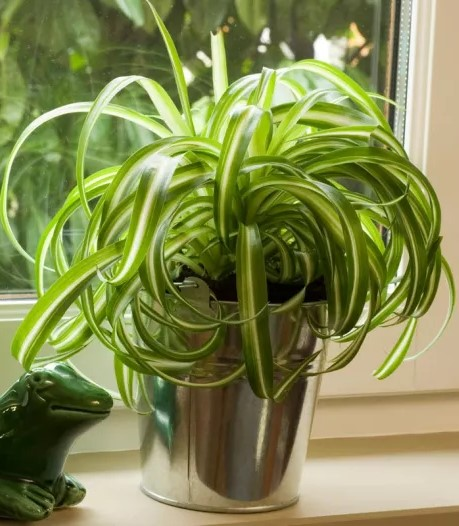
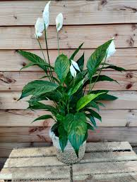
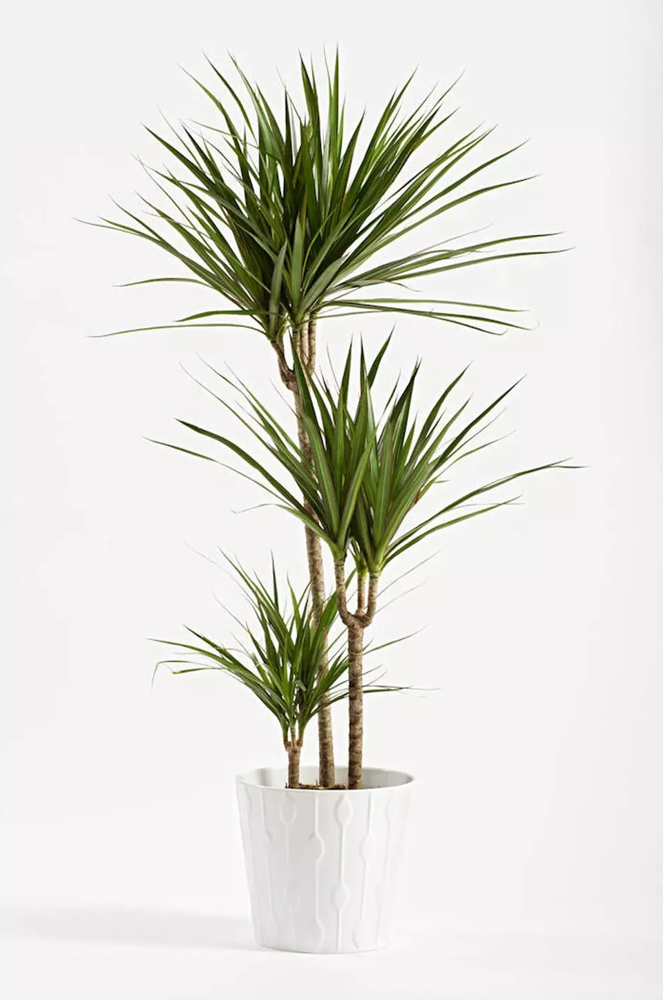

Scroll pour découvrir une sélection de plantes !
Premier projet présentant des fiches d'informations et d'entretient de plantes. Les prochains objectifs sont :
- enrichir la page avec d'avantage de plantes
- proposer une fonction de filtre sur la page (par exemple rechercher les plantes qui on besoin d'être arrosées une fois toutes les deux semaines ou moins en hiver)
Galerie des plantes :
| Phalangère | Spathiphyllum | Yucca |
|  |  |  |